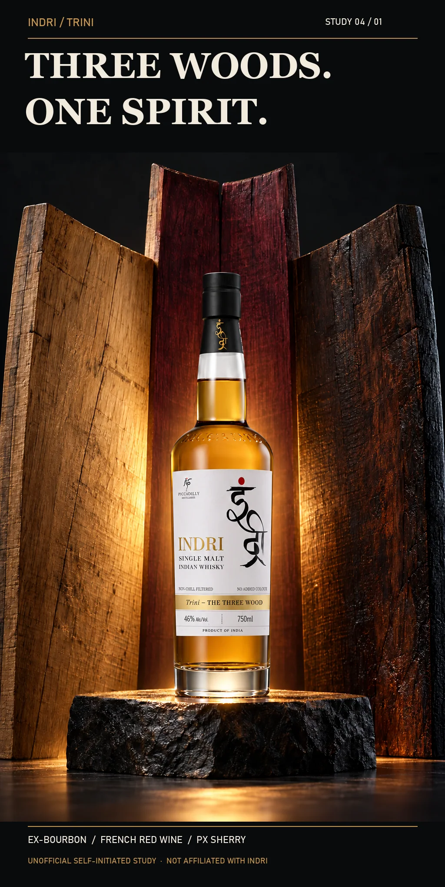
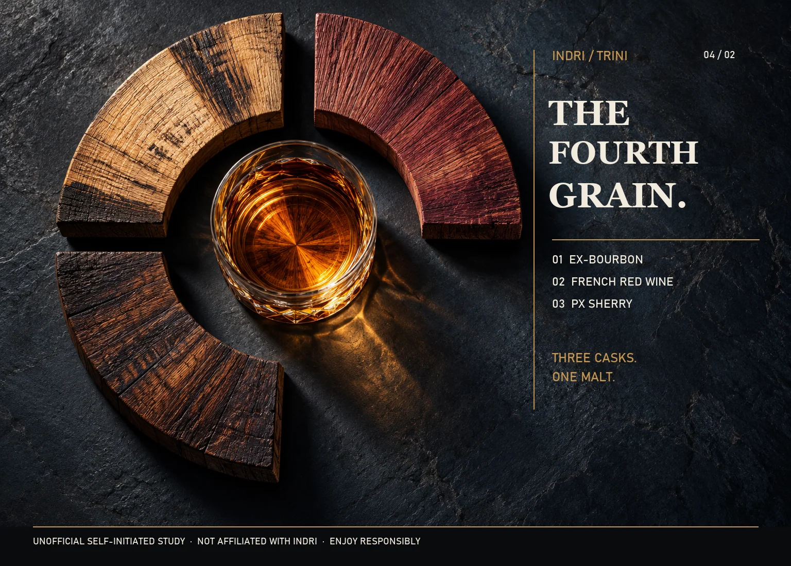

← All work
Drinks · Unofficial brand study
THREE WOODS
Three cask histories converge into one whisky.

The idea
Three distinct wood planes create one meeting point for Indri Trini. The second frame opens a fourth sector, making the resulting spirit the visual completion.
Making the world
Wood grain, amber transmission and a restrained black field carry the material logic. Fine generated label details need verification against authorized packaging.
The series
